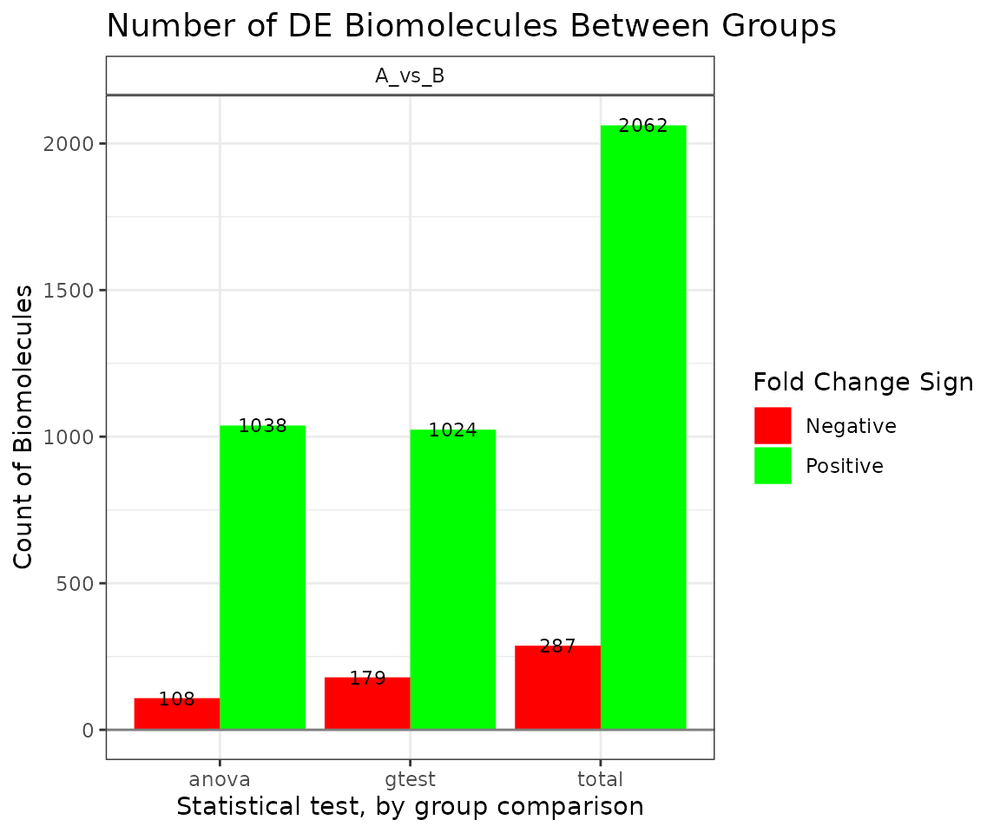
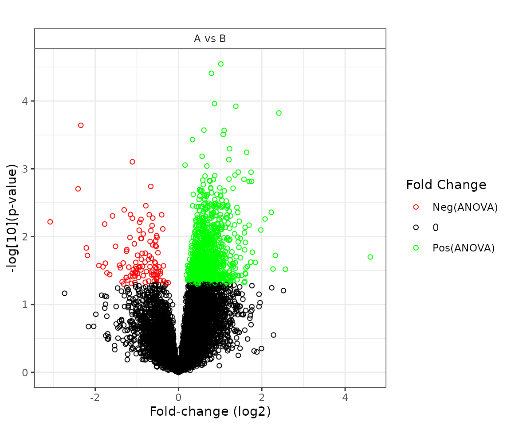

pmartR Packagevignettes/Statistical_Analysis_with_pmartR.Rmd
Statistical_Analysis_with_pmartR.RmdThe pmartR package includes functions to analyze omics data using the most recent statistical methods. Qualitative and quantitative differences in abundance data are tested using the IMD-ANOVA method described in Webb-Robertson et al. (2010). Our IMD-ANOVA functionality can handle omics datasets with various experimental designs, including up to two grouping factors with or without additional covariate information. The data can be paired or not.
The functionality of the pmartR package will be illustrated with peptide data available from the pmartRdata package called pep_object. In a nutshell, the pep_object object is a list of length three of the class pepData. The e_data element contains all of the peptide abundance data, the f_data object contains sample information and the e_meta object contains meta information related to the peptides in the dataset. See the ?pmartRdata for more on this data set.
The imd_anova() function is a wrapper for the anova_test() and imd_test() functions. Below, descriptions of anova_test() and imd_test() functionality are followed by a description of imd_anova() functionality.
Quantitative test for differential abundance of pan-omic data is accomplished using the function anova_test() which implements an analysis of variance (ANOVA) to each biomolecule. Rcpp is used to speed up computation (Eddelbuettel (2013)). Different ANOVA implementations are applied depending on the complexity of the supplied data. For example, if only two groups are supplied then ANOVA reduces to a two sample \(t\)-test that assumes equal variance for the two groups. Alternatively, if two groups are present and a covariate correction is required then the effect of the covariates is removed using a reduced maximum likelihood approach. After the covariate correction is applied, a two-factor ANOVA is used to detect difference between all combinations of groups or between main effects as appropriate. Details on generalizations to these two approaches are given in the next two subsections.
If there is only one grouping factor and that factor has more than two levels, then a one-way ANOVA tests for quantitative differences between the groups. Let \(y_{ik}\) represent the biomolecue abundance for observation \(k=1,\dots,n_i\) in group \(i=1,\dots,m\) on the log base 2 scale then we assume \[\begin{equation} y_{ik}=\mu_i+e_{ik}, \label{eq:one_group} \end{equation}\] where \(\mu_i\) represents the mean abundance of group \(i\) (on the log-scale) and \(e_{ik}\) are the error terms that are assumed to be independent and identically distributed (iid) according to the normal distribution with mean \(0\) and variance \(\sigma^2\).
The code below will group the peptide data by Condition, which is a categorical variable with two levels: “Infection” and “Mock”. Then the anova_test function fits the model described above and tests for differential abundance between Infection and Mock for every peptide.
pep_object <- group_designation(omicsData = pep_object, main_effects = c("Condition"))
myfilt <- imdanova_filter(omicsData = pep_object)
pep_object <- applyFilt(filter_object = myfilt, omicsData = pep_object, min_nonmiss_anova = 2, min_nonmiss_gtest = 3)
all_pairwise_results <- imd_anova(omicsData = pep_object, test_method = "anova")The function anova_test returns a length four list. The first element is called Results which contains the best linear unbiased estimators of \(\mu_i\) in the rows called Mean_i where i is replaced by the group name supplied as an attribute of the omicsData argument, an estimate \(\sigma^2\) in the column Variance, the global \(F\)-test statistic and \(p\)-value in the F_Statistic and p_value columns, respectively. Because every group is assumed to have the same variance, Variance is the maximum likelihood estimators. The remaining three elements, Fold_changes, Fold_change_pvalues and Flags, contain the fold change estimates, \(p\)-values and indicators of significance, respectively, for all pairwise comparisons of groups. Each column of the Flags element is a \(\pm1\) or 0 depending on if that fold change was or was not statistically significant from zero, respectively, according to the \(p\)-values contained in the Fold_change_pvalues data.frame and the specificed \(p\)-value threshold set by the pval_thresh argument. A value of \(-1\) implies the control group is significantly under expressed compared to the test group, and the converse is true for \(+1\).
The \(p\)-values associated with each group comparison can be adjusted to multiple comparisons. A detailed look at the available \(p\)-value adjustment methods and when they should be applied are discussed later in this vignette, but the use of the Tukey multiple comparison method is illustrated in the following.
all_pairwise_results_adjusted <- imd_anova(omicsData = pep_object, test_method = "anova", pval_adjust_a = "tukey")By default, all pairwise comparisons are made. Custom comparisons can by defined by passing a data.frame to the comparisons argument with column names “Test” and “Control”. In the below the, we modify the groupings to demonstrate use of all pairwise comparisons. Now, group “A” is treated as the control group and the remaining groups are compared to it.
pep_object$f_data$Condition2 <- c(rep("A",3), rep("B", 3), rep("C", 3), rep("D", 3))
pep_object <- group_designation(pep_object, main_effects = "Condition2")
one_vs_all <- data.frame(Control=rep("A",3),Test=c("B","C","D"))
one_vs_all_results <- imd_anova(omicsData = pep_object, test_method = "anova", comparisons = one_vs_all)If the grouping variable has only two levels, \(m=2\), then a Welch’s \(t\)-test is performed instead of an ANOVA. That is, the model defined in Equation (\ref{eq:one_group}) is still fit, but the two groups of the grouping factor are allowed to have different variances. In particular, the error terms \(e_{ik}\) are assumed to be independently distributed according to the normal distribution with mean \(0\) and variance \(\sigma^2_i\). To determine if the biomolecules are differentially expressed, \(p\)-values are derived from a \(t\)-distribution with degrees of freedom approximated by the Satterthwaite equation. The value for Variance, which is not a pooled variance estimates, scaled by the Satterthwaite approximate degrees of freedom. To illustrate this the data are grouped by Condition, then fit with anova_test().
pep_object <- group_designation(omicsData = pep_object, main_effects = c("Condition"))
all_pairwise_results <- imd_anova(omicsData = pep_object, test_method = "anova")When this model is fit, it is imperative the researcher check the assumptions of the model. In particular for the \(m>2\) case, the residuals \(\hat e_{ik}=y_{ik}-\hat \mu_i\) are assumed to be independent, normally distributed and have a common variance across groups. The appropriateness of this assumption can be assessed using quantile-quantile plots and comparisons of each group’s variance.
Next we consider the case where there are two grouping factors again in the context of biomolecule abundance. Let \(y_{ijk}\) represent the biomolecule abundance for observation \(k=1,\dots,n_{ij}\) in group \(i=1,\dots,m\) and group \(j=1,\dots,p\) on the log base 2 scale then we assume \[\begin{equation} y_{ijk}=\mu_i+\alpha_j+\gamma_{ij}+e_{ijk}, \label{eq:full_model} \end{equation}\] where \(\mu_i+\alpha_j+\gamma_{ij}\) represents the mean abundance for an observation in \(i\)th first group and \(j\)th second group which have marginal means \(\mu_i\) and \(\alpha_j\), respectively. Finally, \(\gamma_{ij}\) is the interaction effect of group \(ij\), and \(e_{ijk}\) are the error terms that are assumed to be iid according to the normal distribution with mean \(0\) and variance \(\sigma^2\).
For each biomolecule, the anova_test() function automatically tests if the \(\gamma_{ij}\) effect is statistically significant from zero using a full and reduced model \(F\)-test. That is, in addition to the model above, the reduced model \[\begin{equation}
y_{ijk}=\mu_i+\alpha_j+e_{ijk}
\label{eq:red_model}
\end{equation}\] is also fit and the test statistic \[F^*=\frac{MSE_F}{(SSE_R-SSE_F)/(df_R-df_F)}\] is computed where \(MSE_\cdot\) and \(df_\cdot\) are the mean square error and degrees of freedom for the full (F; \ref{eq:full_model}) or reduced (R; \ref{eq:red_model}) model, respectively. A \(p\)-value is computed based on \(F^*\) as \(p=P(F^*>F_{a,b})\) where \(F_{a,b}\) is compared to an \(F\) distribution with degrees of freedom \(a=df_F\) and \(b=df_R-df_F\). If \(p<0.05\) then there is significant evidence to reject the null hypothesis that the reduced model \eqref{eq:red_model} is adequate and the full model \eqref{eq:full_model} is used to test for group differences. Conversely, if \(p\geq 0.05\) then there is not enough evidence to reject the null hypothesis and the reduced model \eqref{eq:red_model} is used.
Regardless of if the full or reduced model is used, both assume that the residuals are independent and normally distributed with a common variance for all groups. These assumptions must be checked before the results of the model are used to assess differential abundance.
If, in addition to a single grouping factor, there are covariates that are to be accounted for when testing for differential abundance then a linear model of the form \[\begin{equation} y_{ik}=\mu_i+\mathbf{x}_{ik}^\top \beta +u_{ik} \label{eq:covar_adj} \end{equation}\] is fit to the transformed abundance data \(y_{ik}\) where \(\mu_i\) is the marginal mean of group \(i\), \(\mathbf{x}_{ik}\) is a vector of covariates for observation \(k\) in group \(i\), \(\mathbf{\beta}\) is the corresponding vector of parameters to be estimated and \(u_{ik}\) are the error terms. An analogous model can be fit when there are two grouping factors of interest. If one of the covariates is colinear with a grouping variable then that covariate is removed from the model, that is, priority is given to the grouping variable over the covariate.
In practice, the covariate adjustment is applied then the one-factor ANOVA model is fit to the covariate adjusted data. That is, after the vector of parameters \(\mathbf{\beta}\) in is estimated, the response \(y_{ik}\) in is replaced with \(y_{ik}^*=y_{ik}-\mathbf{x}_{ik}^\top\mathbf{\beta}\). Though this results in the marginal group means \(\mu_i\) being estimated multiple times, it makes the workflow smoother.
In the event that there aren’t enough data to test for a quantitative difference in abundance between groups, one could still test for a qualitative difference in groups using the independence of missing data (IMD) test. This is often the case for proteomics data where several peptide or proteins could have missing data for one of several reasons. The idea is to assess if there are more missing data in one group compared to another. If there are an adequate number of non-missing data available, then the \(chi^2\) test of independence can be used. This assumption often fails, however, so a modified version of the \(chi^2\) test, called the \(G\)-test, should be used.
The test statistic associated with the IMD test for each biomolecule is given by \[\begin{equation} G=2\sum_{k=1}^K\left[C_{Ok}\ln\left(\frac{C_{Ok}}{E_{Ok}}\right)+C_{Ak}\ln\left(\frac{C_{Ak}}{E_{Ak}}\right) \right] \label{eq:gtest} \end{equation}\] where \(C_{Ok}\) and \(E_{Ok}\) are the observed and expected number of non-missing values for group \(k\), respectively. The quantities \(C_{Ak}\) \(E_{Ak}\) are similarly defined for the missing (absent) values. Further, the expected number of non-missing values is \(E_{Ok}=(m_On_k)/N\) where \(n_k\) is the number of samples associated with group \(k\), \(N\) is the total number of samples and \(m_O\) is the number of samples with this biomolecule missing.
The function imd_test() will perform the test for missing data. The arguments passed to imd_test() are the same as those for anova_test() and the results object returned by imd_test() is of the same class as anova_test(). A list of four items is returned:
Results - the results of the global IMD test, including biomolecue identifier, count of observed and missing observations, the \(G\)-statistic and corresponding \(p\)-value. This “global” \(G\)-statistic determines if there is a qualitative difference between any of the groups.Gstats - \(G\)-statistics computed for each of the comparisons defined by the comparison argumentPvalues - \(p\)-values associated with the \(G\)-statistics in the Gstats data.frame
Flags - Flags (\(\pm 2\)) to indicate for which biomoleuces the groups are qualitative different as measured by the IMD test. A positive value indicates the control group had more missing data than the test group; the opposite is true for negative flags.The imd_anova() function is used to implement the IMD test, ANOVA test, or combined IMD-ANOVA test. If the combined test is implemented, then the IMD and ANOVA tests are implemented using imd_test() and anova_test(), respectively, then the results combined such that the ANOVA results are given priority because the ANOVA results are widely preferred, but IMD results are preferred to nothing.
The same decision process is applied to the final flags as well.
The imd_anova() function returns an object of class statRes that is a list of three items in addition to some attributes. The list is comprised of:
Full_Results - a data.frame with columns for the group means, group counts of non missing data, an estimate of the common variance and a few other things (update when this is finalize).Flags - a data.frame of flags that indicate which biomolecules were significant at the specified \(p\)-value threshold (pval_thresh) for each comparison.P_values - a data.frame that contains the \(p\)-values associated with each biomolecule and comparison evaluated.The statRes object also consists of several attributes which specify the methods used to arrive at the results. This way, the results object is self-contained and can be passed to other functions for further analysis with ease. In particular, the attributes are
group_DF - data.frame defining which samples are associated with which groupscomparisons - data.frame defining the comparisons that were testednumber_significant - data.frame giving the number of significant biomolecules (up and down) for each comparisonstatistical_test - character string giving the statistical test(s) runadjustment_method - character string giving the adjustment for multiple comparisons that was used; NA if none was usedpval_thresh - the numeric value that was an input to anova_test()
Several methods are defined for objects of class statRes including summary(), print() and plot(), which are discussed more in depth in a later section.
Special functions are available for objects of class statRes including print(), summary() and plot(). Due to the typical size the statRes objects, only the head of each element in a statRes object is printed along with the summarized attributes; use print.default() to see the full object. The summary() functions prints the type of test that was run, any adjustments that were made, the \(p\)-value threshold used to define significance and a table that summarizes the number of significant biomolecules (up or down) for each comparison. See below for an illustration.
The plot() function can be used to produce any subset of the following four plots specified by the plot_type argument. If not plot_type is supplied, then all four are created, otherwise on the subset specified is produced.
"bar" - shows the number of significant biomolecules grouped by comparisons"volcano" - a plot of the \(p\)-value by the fold-change estimate differentiated by test and faceted by comparison"heatmap" - illustrates the fold changes for the statistically significant biomolecules (only available if more than one comparison is done)## Type of test: combined
##
## Multiple comparison adjustment ANOVA: none
##
## Multiple comparison adjustment G-test: none
##
## p-value threshold: 0.05
##
## Number of significant biomolecules by comparison. Columns specify fold change direction and type of test:
##
## Comparison Total:Positive Total:Negative Positive:ANOVA Negative:ANOVA
## 1 Infection_vs_Mock 1491 6416 466 4542
## Positive:G-test Negative:G-test
## 1 1025 1874
print(stat_results)## statRes
## Mass_Tag_ID Count_Infection Count_Mock Mean_Infection Mean_Mock
## 1 1047 9 3 24.00732 25.38371
## 2 1055 8 3 26.37405 27.44310
## 3 1104 9 3 31.00451 29.96671
## 4 1110 8 3 21.98179 22.63302
## 5 ---- ---- ---- ---- ----
## 13538 258546088 2 2 25.44738 26.43384
## 13539 292982935 2 2 16.25824 16.96613
## 13540 321896650 2 2 19.75512 20.52970
## 13541 391590766 2 2 24.37726 24.91279
plot(stat_results)
plot(stat_results, plot_type = "volcano")
##\(p\)-value Adjustment Methods
If several comparisons are being made then it is a good idea to adjust the \(p\)-values in order to control the false positive rate. Currently \(p\)-value adjustments are made at the biomolecule level (i.e., adjustments are made for the number of groups being compared), but adjustments across biomolecules will be added in the near future. The available \(p\)-value adjustments are described in the following table. The “Appropriate Comparison” column refers to which correction method is preferred based on the type of comparisons being made, i.e, all pairwise or case-to-control. Check marks in the “ANOVA?” and “IMD?” columns indicate if that correction method is appropriate for ANOVA or IMD comparisons.
| Method Name | Appropriate Comparison | ANOVA | IMD |
|---|---|---|---|
| Bonferroni | Both | \(\sqrt{}\) | \(\sqrt{}\) |
| Dunnett | Case-vs-control | \(\sqrt{}\) | |
| Holm | Both | \(\sqrt{}\) | \(\sqrt{}\) |
| Tukey | All pairwise | \(\sqrt{}\) |